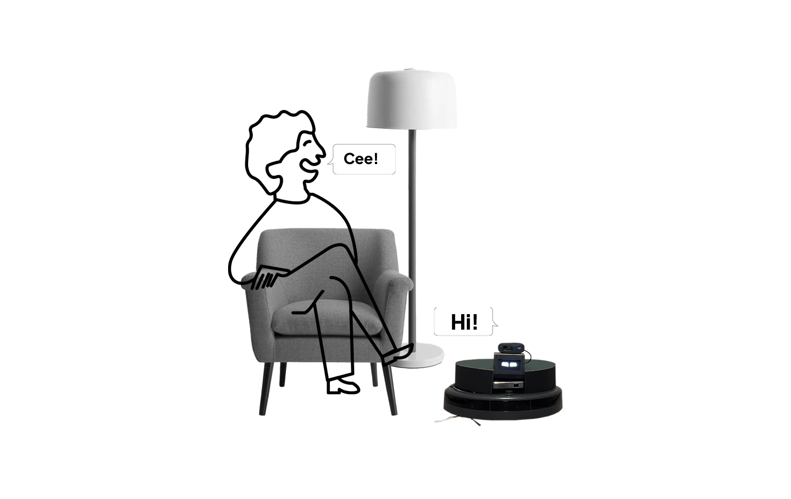
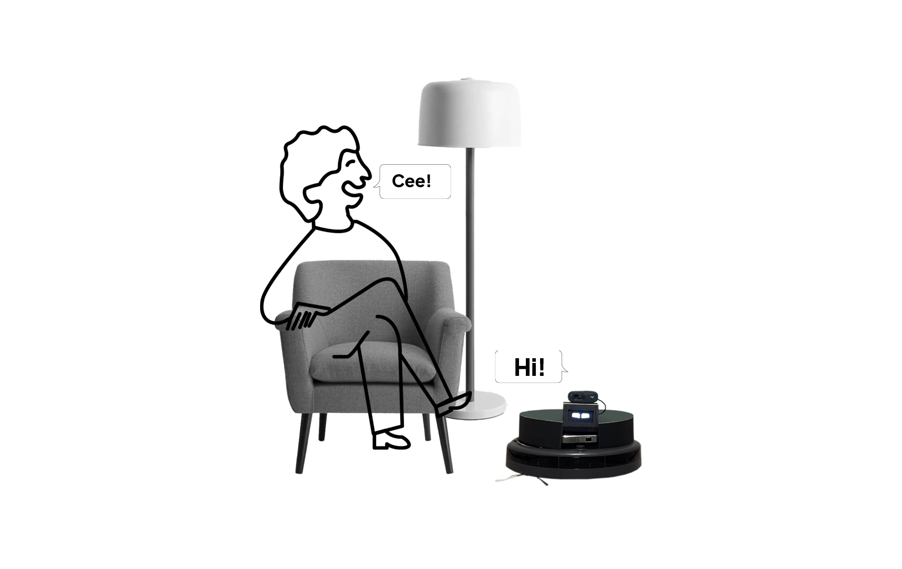

Hello! I'm Fern Itthisang
Currently, I'm a designer who is passionate about data visualization, interactive design, and creating human-centric digital experiences. My journey began with architecture, where I learned to visualize space and create environments that resonate with human experience. Over time, I discovered that data could tell stories too—stories that shape how we perceive and understand the world.
This realization led me to explore the intersection of design, technology, and human interaction. I began to see both architects and data visualizers as storytellers—crafting narratives that connect people to spaces, ideas, and information.

 
